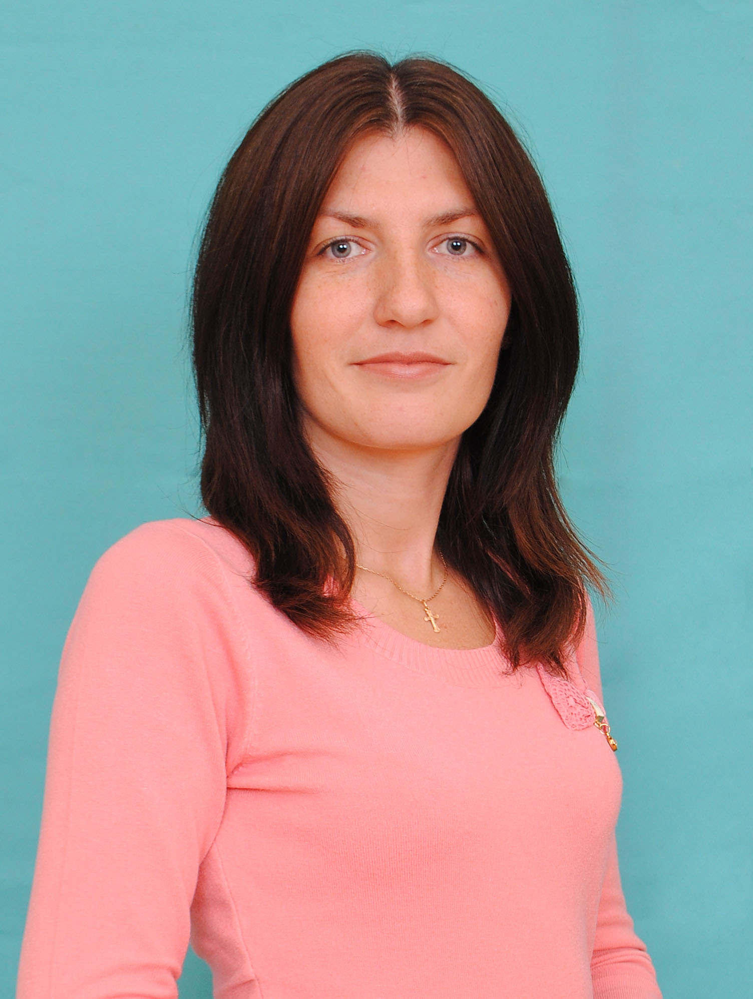
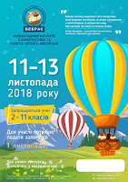

<!DOCTYPE html>
 <head>
  <meta http-equiv="Content-Type" content="text/html; charset=utf-8" />
  <title>Мой сайт</title>
  <style type="text/css">

    .logo img  {
		background: #666; /* Цвет фона */
		margin-right: -5px; /* Отступ справа */
		margin-bottom: -20px; /* Отступ снизу */ 
		}
  
    .title{
		font-size: 36px;
		padding-top: 10px;
		text-align: center;}
  
	.menu-line{}
   
	.nav {
		background-color: 
		list-style-type: none;
		text-align:left;
		margin: 0;
		padding: 0;}

	.nav li {
		display: inline-block;
		font-size: 17px;
		padding: 10px;
		text-align:justify;}

	A {
		text-decoration: none; /* Убирает подчеркивание для ссылок */
		color: black; /* Цвет ссылок */ 
		font-size:14pt;} 
   
	A:hover { 
		text-decoration: underline; /* Добавляем подчеркивание при наведении курсора на ссылку */
		color: blue; /* Ссылка зеленого цвета */   } 
   
	li {
		list-style-type: none; /* Убираем маркеры */  }		 
			 
   .footer { background: #87CEFA;font-size:14pt}
   .layout { overflow: hidden; font-size:16pt; }
   .layout DIV { float: left; }
   
   .col1 { background: #87CEFA; width: 15%; }
   
   h3 {
   text-decoration:underline ;
   text-align: center;}
   
   h4 {
   font-style: italic;
   text-align: center;}

	#calendar2 {
		width: 100%;
		font: monospace;
		line-height: 1.2em;
		font-size: 15px;
		text-align: center;}
		
	#calendar2 thead tr:last-child {
		font-size: small;
		color: rgb(85, 85, 85);}
		
	#calendar2 thead tr:nth-child(1) td:nth-child(2) {
		color: rgb(50, 50, 50);}
		
	#calendar2 thead tr:nth-child(1) td:nth-child(1):hover, #calendar2 thead tr:nth-child(1) td:nth-child(3):hover {
		cursor: pointer;}
		
	#calendar2 tbody td {
		color: rgb(44, 86, 122);}
		
	#calendar2 tbody td:nth-child(n+6), #calendar2 .holiday {
		color: rgb(231, 140, 92);}
		
	#calendar2 tbody td.today {
		background: rgb(220, 0, 0);
		color: #fff;}
	
   .col2 { background: #FFFFFF; width: 70%; }
   
   .leftimg {
		float:left; /* Выравнивание по левому краю */
		margin: 0px 7px 7px 0; /* Отступы вокруг картинки */ }
	
	.col3 { background: #87CEFA; width: 15%; }
		
  </style>
<script type="text/javascript">
</script>
 </head>
 <body>
 
   <p class="logo img">
   
   </p></div>
  
   <div class="example1"></div>
   <div class="layout">
   <marquee behavior="scroll" direction="left" bgcolor="#AFEEEE">
    Ласкаво просимо!
  </marquee>
  <div class="col1">
  <h3>Меню сайту</h3>
   	<div id="side-left">
		<div id="left-nav">
			<ul>
				<li><a href="https://mon.gov.ua/ua/osvita/zagalna-serednya-osvita/navchalni-programi">Навчальні програми</a></li>
				<li><a href="Book.html">Підручники</a></li>
				<li><a href="Internet.html">Безпечний Інтернет</a></li>
				<li><a href="Dates.html">Пам'ятні дати</a></li>
				<li><a href="Famous.html">Видатні постаті</a></li>
				<li><a href="https://www.youtube.com/watch?time_continue=578&v=a-XB0ja9rc4">Техніка безпеки</a></li>
				<br>
			</ul>
		</div>
	</div>
<table id="calendar2">
  <thead>
    <tr><td>‹<td colspan="5"><td>›
    <tr><td>Пн<td>Вт<td>Ср<td>Чт<td>Пт<td>Сб<td>Нд
  <tbody>
</table>

<script>
function Calendar2(id, year, month) {
var Dlast = new Date(year,month+1,0).getDate(),
    D = new Date(year,month,Dlast),
    DNlast = new Date(D.getFullYear(),D.getMonth(),Dlast).getDay(),
    DNfirst = new Date(D.getFullYear(),D.getMonth(),1).getDay(),
    calendar = '<tr>',
    month=["Січень","Лютий","Березень","Квітень","Травень","Червень","Липень","Серпень","Вересень","Жовтень","Листопад","Грудень"];
if (DNfirst != 0) {
  for(var  i = 1; i < DNfirst; i++) calendar += '<td>';
}else{
  for(var  i = 0; i < 6; i++) calendar += '<td>';
}
for(var  i = 1; i <= Dlast; i++) {
  if (i == new Date().getDate() && D.getFullYear() == new Date().getFullYear() && D.getMonth() == new Date().getMonth()) {
    calendar += '<td class="today">' + i;
  }else{
    calendar += '<td>' + i;
  }
  if (new Date(D.getFullYear(),D.getMonth(),i).getDay() == 0) {
    calendar += '<tr>';
  }
}
for(var  i = DNlast; i < 7; i++) calendar += '<td>&nbsp;';
document.querySelector('#'+id+' tbody').innerHTML = calendar;
document.querySelector('#'+id+' thead td:nth-child(2)').innerHTML = month[D.getMonth()] +' '+ D.getFullYear();
document.querySelector('#'+id+' thead td:nth-child(2)').dataset.month = D.getMonth();
document.querySelector('#'+id+' thead td:nth-child(2)').dataset.year = D.getFullYear();
if (document.querySelectorAll('#'+id+' tbody tr').length < 6) {  // чтобы при перелистывании месяцев не "подпрыгивала" вся страница, добавляется ряд пустых клеток. Итог: всегда 6 строк для цифр
    document.querySelector('#'+id+' tbody').innerHTML += '<tr><td>&nbsp;<td>&nbsp;<td>&nbsp;<td>&nbsp;<td>&nbsp;<td>&nbsp;<td>&nbsp;';
}
}
Calendar2("calendar2", new Date().getFullYear(), new Date().getMonth());
// переключатель минус месяц
document.querySelector('#calendar2 thead tr:nth-child(1) td:nth-child(1)').onclick = function() {
  Calendar2("calendar2", document.querySelector('#calendar2 thead td:nth-child(2)').dataset.year, parseFloat(document.querySelector('#calendar2 thead td:nth-child(2)').dataset.month)-1);
}
// переключатель плюс месяц
document.querySelector('#calendar2 thead tr:nth-child(1) td:nth-child(3)').onclick = function() {
  Calendar2("calendar2", document.querySelector('#calendar2 thead td:nth-child(2)').dataset.year, parseFloat(document.querySelector('#calendar2 thead td:nth-child(2)').dataset.month)+1);
}
</script>
	<center><h3>Календар подій</h3></center>
		<center><h4>Hour of Code</h4></center><p style="margin-left:10%;font-size:14pt;">  З <b><em>3-9 грудня 2018 року</em></b> відбудеться <b><em>Час коду</em></b>. Мільйони учнів, студентів і викладачів більш ніж в 180 країнах світу починають свій шлях в світі програмування разом з Годиною коду. Приєднуйтесь!</p>
		<center></center> 
		<br><br></div>
<div class="col2">
 
<center><p style="color:#00BFFF;font-family:Times New Roman;font-style:italic;font-size:20pt;white-space: pre-wrap;">Вчитель інформатики
<b>Вегерчук Наталя Олександрівна</b></p></center>
<pre><p style="color:black;font-family:Times New Roman;font-size:14pt;margin-left: 27%;white-space: pre-wrap;"><b><em>	Наталя Олександрівна</em></b> працює за проблемою: «Використання ігрових технологій на уроках інформатики в рамках НУШ». Вчитель добре знає типи і структуру уроків, урізноманітнює їх у своїй роботі. Забезпечує засвоєння учнями базових теоретичних знань та практичних умінь і навичок, передбачених програмою. Вчителька вміло організовує навально-виховний процес з урахуванням вікових та психологічних особливостей учнів, будує навчальну роботу у відповідності з сучасними вимогами. Основний принцип роботи Наталі Олександрівни – навчити застосовувати теоретичні знання з інформатики практично. Для цього використовуються програмні засоби : OS Windows, Xubuntu, Open Office, мережа Інтернет, клавіатурні тренажери. У її методичному арсеналі комп’ютерні, проектні, інтеграційні, діалогові, ігрові технології.
</p></pre>
<pre><p style="color:black;font-family:Times New Roman;font-size:14pt;white-space: pre-wrap;">	Вчитель бере активну участь у роботі шкільної методичної комісії вчителів фізико – математичного та природничого циклу. Постійно ділиться досвідом з колегами навчального закладу щодо покращення результативності навчально- виховного процесу через проведення консультацій.
	Результативність праці вчителя висока. Її вихованці є переможцями районних олімпіад, Міжнародного конкурсу з інформатики та комп’ютерної вправності Бобер (Bebras), конкурсу з інформатики «Безпечний Інтернет», інтернет-олімпіад з інформатики.
	Участь її учнів у районних учнівських олімпіадах  також висока:
		2012-2013 р. – Бас Валерій, ІІ місце у районній олімпіаді з інформатики; 
		2016-2017 р. – Єгоров Вадим, ІІІ місце районній олімпіаді з інформатики; 
		2017-2018 р. – Єгоров Вадим, ІІ місце у районній олімпіаді з інформатики.
 	У 2012 році взяла участь в навчальному курсі Microsoft «Основи безпечної роботи з ІКТ в навчальному закладі» та отримала сертифікат. За плідну працю у 2016 році її нагороджено грамотою відділу освіти приморської районної адміністрації Одеської міської ради; у 2018 році нагороджена почесною грамотою департаменту освіти та науки Одеської міської ради.
</p></pre>
<pre><center>        </center></pre>
</div>
   
   <div class="col3">
   <div id="side-right">
		<h3>Оголошення</h3>
		<h4>Конкурс з інформатики<br>Bebras</h4><p style="margin-left:10%;font-size:14pt;"> З 11-13 листопада 2018 року відбувся міжнародний конкурс з інформатики та комп'ютерної вправності "Бобер" ("Bebras") </p>
		<center></center>
		
		<div class="advert">
		<center><h4>Безпечний Інтернет</h4></center><p style="margin-left:10%;font-size:14pt";>1-30 вересня відбувся конкурс з інформатики "Безпечний Інтернет</p>
		</div>
		
		<div class="advert">
		<center><h4>Інтернет-олімпіади</h4></center><p style="margin-left:10%;font-size:14pt";>1-30 вересня 2018 року - пройшла реєстрація на олімпіади<br>1 жовтня по 2 листопада відбулися інтернет-олімпіади.
		<br></p>
		</div>
	</div></div>
  </div>
  

 <center> <div class="footer">
				<div id="footer">
					Вегерчук Наталя Олександрівна &copy  2018
				</div>	
		  </div>
</center> 
</body>
</html>